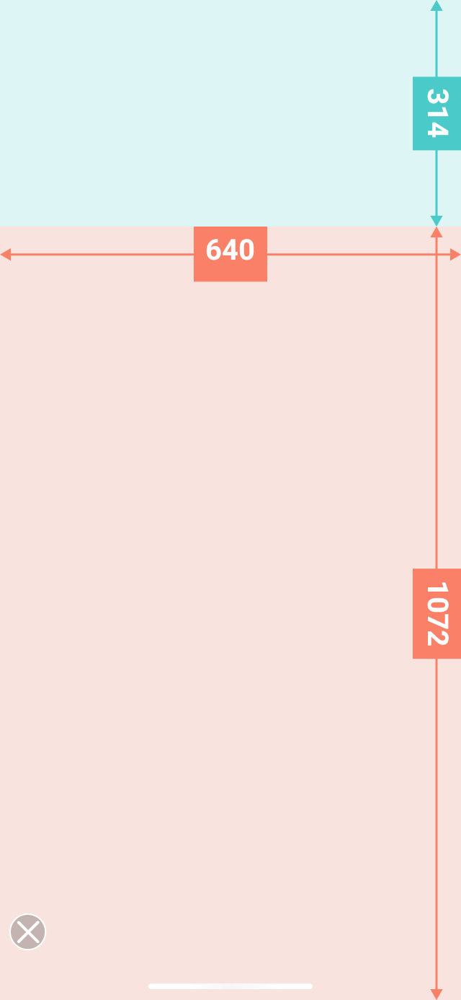
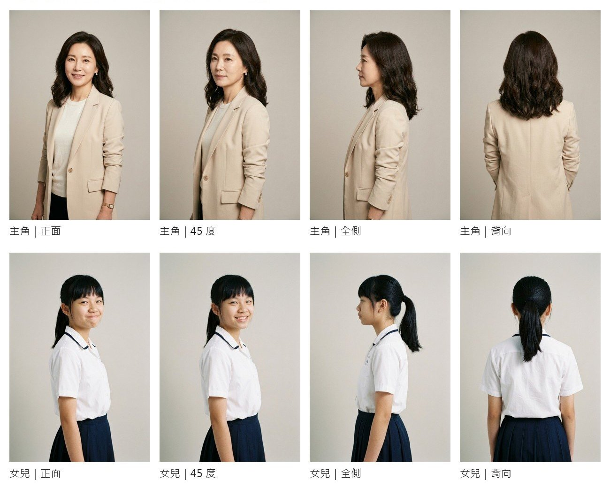
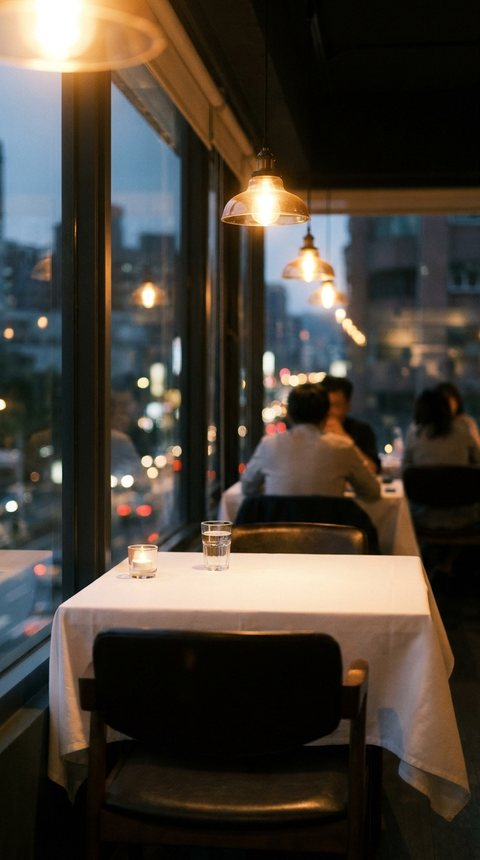
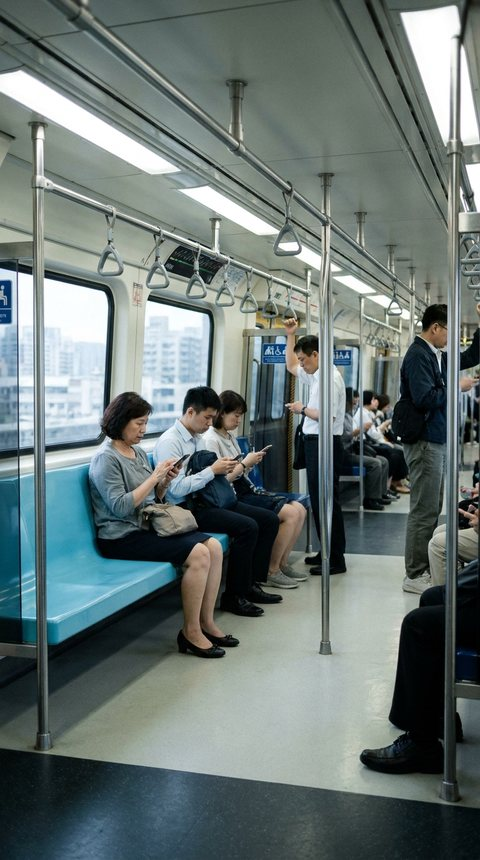
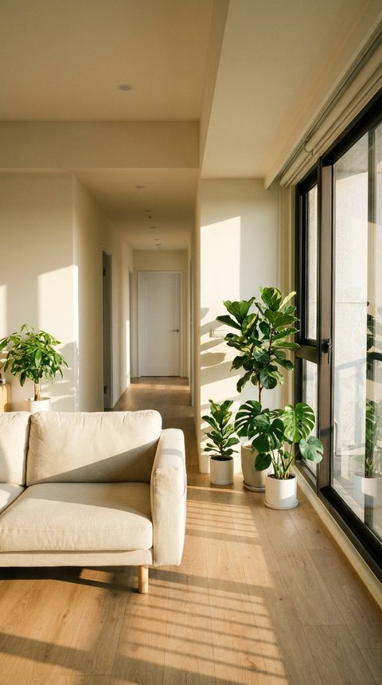
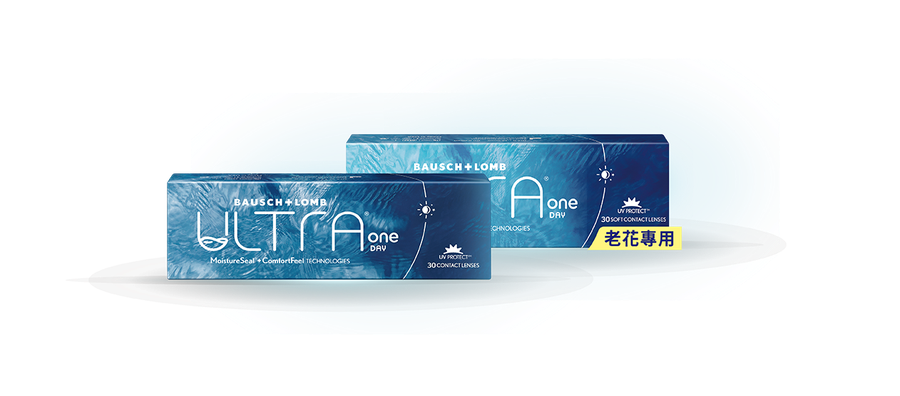

0.0 / 21.0s
成片 v2・有聲・21 秒
手臂不夠長
老花最大的痛點不是看不清楚，而是把菜單、手機拉遠的那一瞬間，別人就知道你老了。前段三個越拉越遠的日常場景，接三區漸進鏡片，最後落在母女同框的 End Cut。
- 版位
- Cr.ED Motion 全屏
- 尺寸
- 640 × 1386
- 長度
- 21 秒・8 鏡

Motion 全屏的安全範圍
- 上方 314px 依手機尺寸可能被裁切，只放延伸的背景
- 下方 640 × 1072 是安全範圍，logo、文案、法規、按鈕都放在這裡
- 左下角是平台的關閉按鈕，底部中央是手機的 Home 橫條，兩處都不放資訊
8 / 8格符合規範
每格的文字最高點都在 y 314 以下，最低點都在關閉按鈕（y 1250）之上。開關遮罩可以對照每一格。
分鏡
成片截圖・點擊放大檢視・座標為規格 px（640 × 1386）
角色、場景與產品
Nano Banana Pro 定裝；產品與標準字取自官網，不由 AI 生成
角色定裝
主角 48 歲、女兒 14 歲，各四個角度，全片同一套服裝

場景光位
三個場景各一張空景，固定主光方向



產品
官網去背圖，正式定版需向客戶索取原始檔

製作備註
畫面怎麼做出來的
- 人物、場景定裝用 Nano Banana Pro；動作鏡頭用 Seedance 2.0，給首尾兩格（首格用大香蕉補畫動作前），白模只用來對節奏
- S4a 鏡片與 End Cut 底部的泳池光紋用 Kling 2.5 Turbo 生成
- 9:16 成片以高度為準放大、左右裁切成 640 × 1386
- 字卡、瞇眼縫轉場、瞳孔掃光、End Cut 全部在後期用 GSAP 與 HyperFrames 合成；產品與標準字取自官網
- 口白 Gemini TTS（台灣口音），配樂與音效 Stable Audio 3，混音 -14 LUFS
待確認
- 廣告核准字號待取得，End Cut 法規列目前為「（待送審）」
- 產品包裝原始檔（PSD 或高解析 PNG）
- Motion 全屏的全屏圖元件是圖片（單張 < 150KB、總動畫 5 秒內），21 秒成片的上稿方式待確認
- Stable Audio 3 配樂與音效的商用授權請法務確認